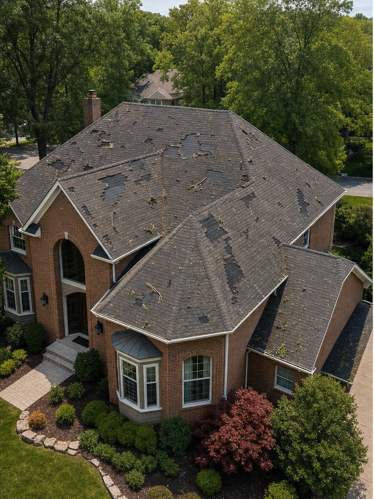
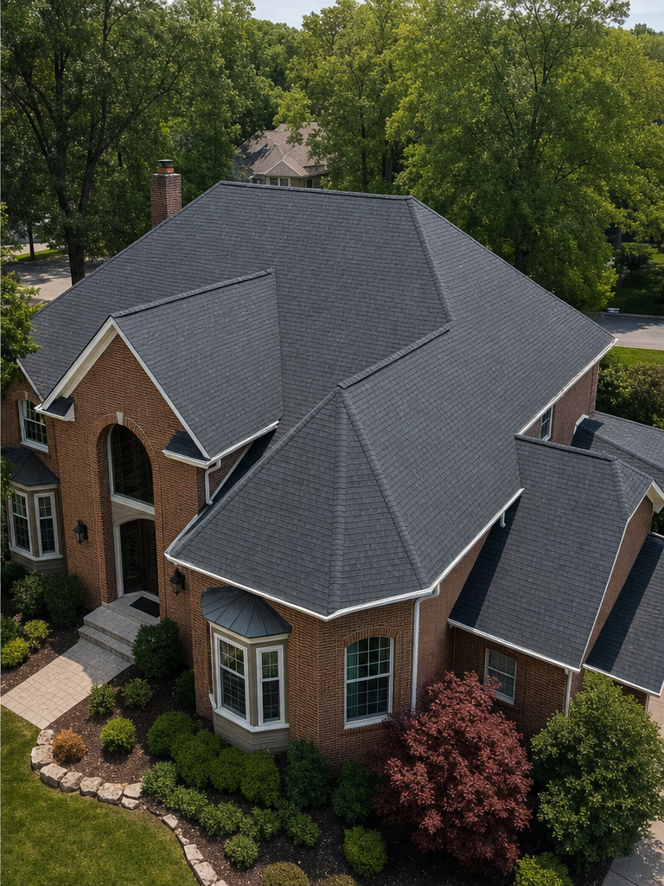

01
Hail, wind, or debris may have affected the property
A recent weather event creates a reason to document the roof’s visible condition.
Storm damage restoration · St. Louis
Storm Damage Restoration
A storm-related roofing decision should begin with the visible condition of the roof, the areas affected, and a written scope based on what is documented—not assumptions about cause, coverage, or outcome.

When storm damage restoration is appropriate
These conditions can justify a closer look. They do not, on their own, establish the cause of damage, the correct restoration method, or insurance coverage.
A recent weather event creates a reason to document the roof’s visible condition.
Visible changes at roof surfaces, edges, transitions, or adjoining components warrant a property-specific review.
The observed interior or exterior condition should be documented before the proposed roofing work is defined.
The owner needs a written scope that connects visible roof conditions to the proposed work.
Oxford’s exact storm-assessment methods, emergency measures, documentation deliverables, and role in an insurance process require operational confirmation.
Oxford’s storm-restoration principles
Begin with the roof and property as they appear after the reported weather event.
Organize the visible findings by roof area, component, and relevant transition.
Use the documented condition and approved work to establish the written project scope.
What the storm scope considers
The final scope depends on Oxford’s documented assessment and the written proposal. A storm restoration project may require the following categories to be defined.
The final prototype needs confirmation of Oxford’s assessment method, documentation package, restoration criteria, and any separation between storm restoration and insurance claims assistance.
The storm restoration process
Review the property context and the roof’s visible post-storm condition.
Organize the observed conditions and affected roof areas for review.
Build a written restoration scope based on the documented condition and approved work.
Complete and review the roofing work identified in the accepted proposal.

Verified storm restoration
Oxford’s existing portfolio identifies this Chesterfield project as hail restoration. The aligned before-and-after photography shows the verified visual record without adding an unconfirmed project scope.
View ProjectComplete Oxford service territory
Oxford’s approved territory includes the following Missouri and Illinois communities.
Missouri
Missouri
Missouri
Missouri
Missouri
Missouri
Illinois
Illinois
Illinois
Our service area is always growing. If you’re in or near the greater St. Louis region, there’s a good chance Oxford Roofing can help. Contact us and we’ll confirm whether your property is within our current service area.
Storm damage restoration FAQ
These draft answers define a conservative boundary around storm restoration. Oxford’s exact practices remain subject to operational review.
Hail, wind, and debris can be followed by visible changes to roof surfaces, edges, transitions, or adjoining components. An observation does not by itself certify the cause or establish the appropriate work.
No. A roofing assessment can document visible roof conditions. Coverage decisions belong to the insurer under the applicable policy, and no coverage outcome is represented here.
The decision should follow the documented extent of the visible condition, the roof context, and the proposed written scope. Oxford’s specific restoration criteria require operational confirmation.
Oxford lists Insurance Claims Assistance as a separate service. The company’s exact role, boundaries, and documentation practices require confirmation; no insurer representation or claim outcome is implied.
The exact condition photography, assessment notes, proposal, change, completion, and product records supplied by Oxford require operational confirmation and should be identified in the written project documents.
Begin with the visible condition
Oxford can review the property and visible roof condition before the proposed restoration scope is defined. No cause, coverage decision, response time, or project outcome is assumed in advance.
Request an Inspection